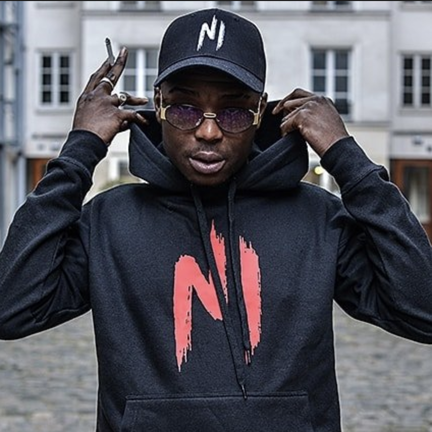
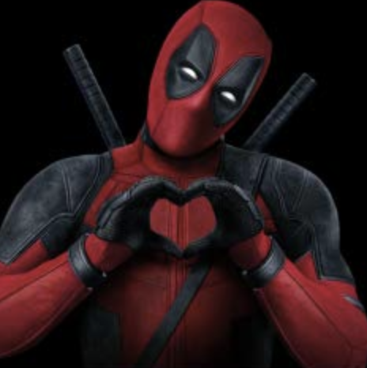
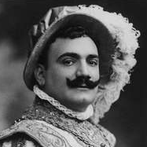
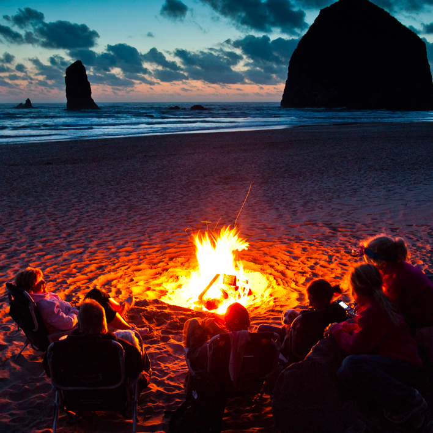
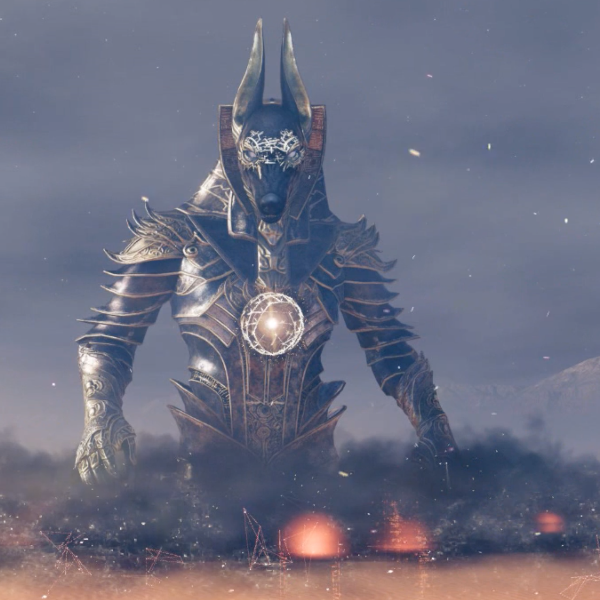
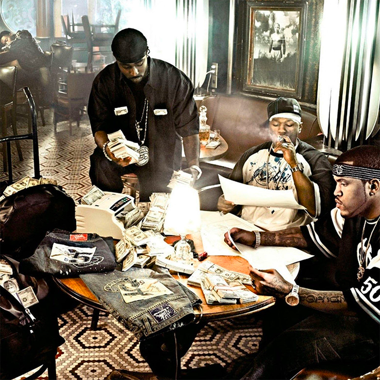

Beats
Voici l'intégralité des instrumentales que j'ai réalisées à l'aide du logiciel FL Studio.
Voici un type beat Ninho, inspiré du son PGP : un rythme en triolet et un piano puissant.
Ninho Type Beat
C'est une instru que j'ai faite il y a un an. Le cri au refrain est issu d'une vidéo populaire d'un petit garçon se prenant des balles de basket sur le crâne en criant.
Trap Beat

Enrico Caruso était un ténor, j'ai repris une boucle dans sa musique Pecchè pour en faire une prod oldschool.
Oldschool Beat
Une prod assez basique mais qui peut accompagner un texte posé, un peu comme "Notes pour trop tard" de Orelsan.
Chill Beat
Une de mes premières prod, avec une inspiration mélangeant Scarlxrd et Égypte.
Egyptian Trap Beat
Cette prod a pour but d'accompagner le freestyle d'un ami, une version longue est d'ailleurs en préparation.
Gangsta Beat
Pas encore sur les réseaux #exclusivité
Contact
Mes instrumentales sont gratuites, du moment que vous m'identifiez en cas d'utilisation sur les réseaux. Vous pouvez me les demander par mail :